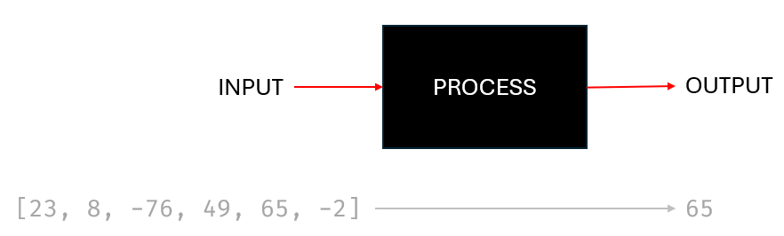

Software
Objectives
- Explain what the terms hardware, software and computer system mean
- Explain what system software and application software are
- Explain the purpose of the operating system
- Explain the purpose of utility software
We hear the term system applied to many different situations e.g. an education system, a political system, the digestive system and here a computer system.
The goal of any such system is to organize and manage things to make them work together smoothly. It's like a set of rules or a plan that helps different parts or components work together to achieve a common goal. For an education system we have teachers, students, classrooms and school rules. Each part making their own distinct contribution to an agreed outcome - learning. A political system aims to ensure a country is well organised and structures and additional internal systems work well together according to the laws and institutions of that country.
Your computer or smartphone is a system too. It has hardware (like the physical parts of your device) and software (like the apps and operating system). The system is designed so that when you click on an icon, the right program opens, and everything runs smoothly.
In each example, a system is like a well-thought-out plan that makes sure everything works together efficiently. It's about organizing and coordinating different elements to achieve a specific purpose or goal.
Our purpose in this section is to describe and define some of these fundamental elements that make up a computer system.
A Computer System
Conventionally we describe a computer system as consisting (at a high level) of three elements:
- Input
- Process
- Output

We think of the input elements as things like the keyboard or mouse, and outputs like the screen or printer. The computer itself being responsible for processing those inputs and delivering the output. This is, of course, highly simplified. the smartphone is a powerful computer. Here the screen acts as both an input and an output device but it's important to distinguish the functionality.
Every computer system comprises both hardware and software. The hardware is essential, but without software, it serves little purpose. Likewise, the software needs hardware to run on.
Hardware
The hardware of any computer system are the physical components. They are tangible, touchable, we can see them and interact with them. They include the processor (CPU), memory (RAM), storage devices such as hard drives or solid state drives (SSD). Also input devices such as a keyboard, a mouse or a microphone and output devices such as a screen, a printer or speakers.
Software
The software of any computer system refers to the programs, instructions, and data that make the computer system function. Unlike hardware, which consists of physical components, software is intangible, we cannot touch it, and consists of code or instructions that tell the computer what to do.
Software includes operating systems (like Windows, macOS, or Linux), application software (such as word processors, web browsers, and games), and system software that manages and controls the computer's hardware components. It encompasses a wide range of programs and code that enable the computer to perform specific tasks and execute various functions.
Software is the virtual, non-physical part of a computer system that makes the hardware operate and perform specific functions.
Types of software
Software can be broadly classified into two categories:
- Application software
- System software
System software can be classified into two further categories:
- Operating system software
- Utility software
Application Software:
Application software is designed for the end-users and specific tasks. It's the software that allows users to perform various functions and tasks on a computer.
Examples of application software include, amongst many other:
- Word Processors: Microsoft Word, Google Docs, and WordPad are examples. They are used for creating, editing, and formatting documents.
- Web Browsers: Examples include Google Chrome, Mozilla Firefox, and Microsoft Edge. These applications allow users to access and interact with content on the internet.
- Media Players: Software like VLC Media Player, Windows Media Player, or iTunes fall into this category. They are used to play audio and video files.
- Graphic Design Software: Adobe Photoshop, CorelDRAW, and GIMP are examples. They are used for creating and editing images and graphics.
All such application software will run, and may interact with, the underlying operating system in order to interact with the hardware.
System Software
System software is a type of software that provides a platform for other software to run on and interacts directly with the computer hardware. It manages and controls the overall operation of the computer system.
Examples of system software include:
-
Operating Systems (OS): The central part of any computer system software. Examples include Microsoft Windows, macOS, and Linux. These software systems manage hardware resources, provide user interfaces, and facilitate communication between software applications and the computer hardware. Any computer system is a collection of different resources. The CPU, memory, storage devices and file systems etc are examples of resources and it is the role of the operating system to manage these disparate resources and present them in a usable form to the end-user.
-
Device Drivers: These are programs that allow the operating system to communicate with and control specific hardware devices, such as printers, graphics cards, or network adapters 1.
-
Utilities: These are tools that perform specific tasks related to system management and maintenance, such as disk cleanup utilities or antivirus software.
Role of an operating system
There are four primary functions for all operating systems whether they be for desktop computers, laptops, tablets, smartphones etc:
- Manage resources: Operating systems manage computer hardware resources efficiently, ensuring that multiple programs and processes can run concurrently without conflicts.
- Provide a user interface: The OS provides a user-friendly interface for users to interact with the computer, enabling them to execute programs, manage files, and control system settings.
- Hardware Abstraction: The OS hides complex hardware details, providing a standardized interface for software applications. This abstraction allows programs to run on various hardware configurations.
- Security: Operating systems implement security features to protect the system and data from unauthorized access, viruses, and other threats.
Management of resources
- Processor Management: Allocation of CPU time to different programs and processes; manages task scheduling to ensure fair and efficient use of the processor.
- Memory Management: Allocation and deallocation of memory for programs and processes; handles virtual memory, allowing the use of disk space as an extension of RAM.
- Input/Output (I/O) Management: Manages communication between the computer and external devices like keyboards, printers, and storage devices; handles data transfer between the CPU and peripherals.
- Application Management: Coordinates the execution of software applications, managing their loading, execution, and termination; provides an environment for applications to run smoothly.
- Security and Access Control: Implements user authentication and access control mechanisms; ensures data and system security through user permissions and encryption.
Provide a user interface
The user interface (UI) is a crucial aspect of the operating system (OS) that serves as the bridge between the computer's complex functionalities and the user's need for simplicity and ease of use. The OS offers a user-friendly interface to ensure that individuals, regardless of their technical expertise, can effectively interact with and harness the power of the computer system.
Most computer systems provide a Graphical User Interface (GUI) employing elements such as icons, windows, menus, and buttons. This visual representation simplifies complex operations, allowing users to perform tasks intuitively.
Alongside the GUI the OS will also provide a Command Line Interface (CLI). A text-based method of interacting with a computer or software, where users input commands through a terminal or command prompt. In a CLI, users type specific commands to perform tasks, navigate the file system, execute programs, and configure system settings. Unlike graphical user interfaces (GUIs) that use visual elements like icons and buttons, CLIs rely on text-based commands and responses, providing a more direct and efficient way for experienced users to control and manage a computer system.
The operating system interface will also include accessibility features to cater to users with diverse needs such as screen readers for the visually impaired, magnification options, and keyboard shortcuts for individuals with motor impairments.
Other features will include:
- Through the user interface, users can seamlessly launch and manage various software applications. Icons or shortcuts represent programs, providing a convenient way for users to access and execute them.
- The user interface facilitates file management by presenting a file explorer or file manager. Users can navigate through directories, create folders, copy, paste, and delete files with simple interactions, making the organization of digital content straightforward.
- Adjusting system settings is made accessible through the user interface. Users can customize preferences related to display settings, sound configurations, network connections, and more. This empowers individuals to tailor the computing environment according to their preferences.
- The interface supports multitasking by allowing users to run multiple applications simultaneously. Window management features enable users to switch between open programs, minimize or maximize windows, and organize their workspace efficiently.
- Modern operating systems incorporate notification systems that keep users informed about updates, messages, and system alerts. These notifications are often presented in a non-intrusive manner, ensuring users stay informed without being overwhelmed.
- Search functionalities within the interface enable users to quickly locate files, applications, or settings. This is particularly useful as storage systems become larger and more complex.
By providing a user interface that is both intuitive and visually appealing, the operating system enhances the overall user experience, making computing accessible to a broad audience. This emphasis on user-friendly design ensures that individuals can harness the full potential of their computer systems without being hindered by technical complexities.
Utility Software
Utility software includes tools that perform specific tasks related to system management and maintenance. For example:
- Disk Cleanup Utilities: Remove unnecessary files and free up disk space
- Antivirus Software: Detect and remove malware, viruses, and other security threats.
- Backup and Recovery Tools: Create copies of important data for safeguarding against data loss.
- Disk Defragmenters: Rearrange fragmented data on a disk to improve performance.
- System Monitoring Tools: Monitor system performance, resource usage, and troubleshoot issues.